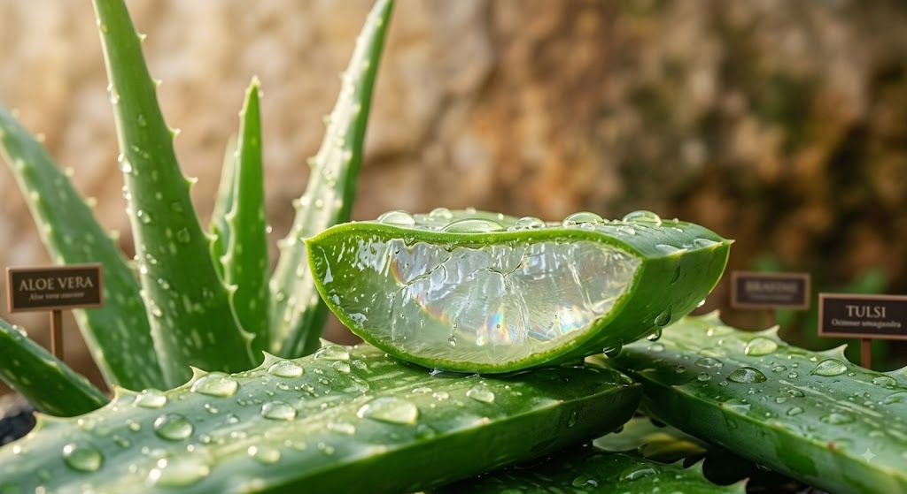
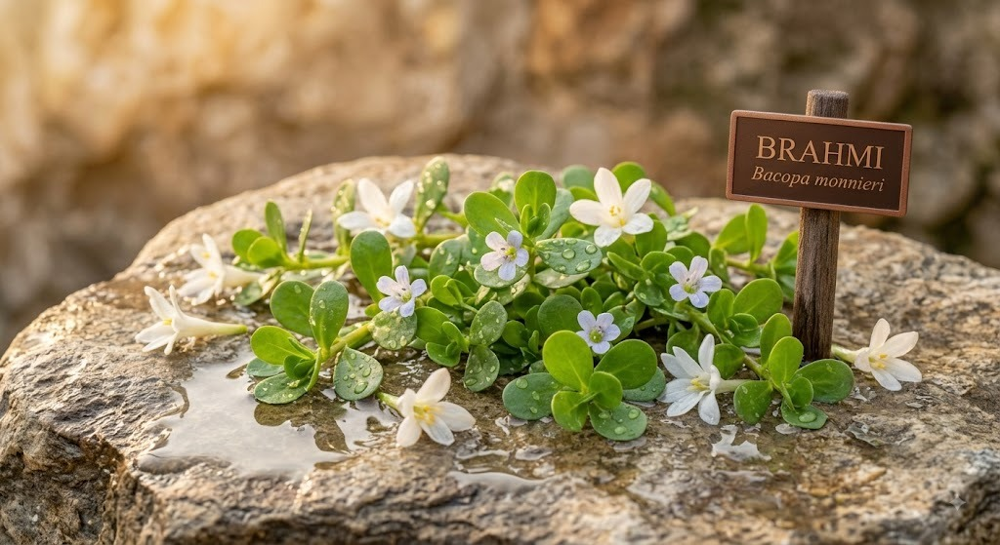
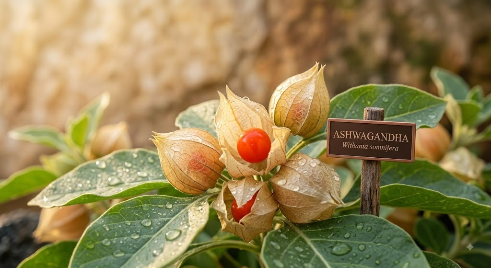

12 Species
Digestive & Metabolic Garden
Flora targeting Agni Deepana (digestive fire) and Pachana bio-energetics. Features Ginger, Pippali, Cinnamon, and Ajwain.
Select any garden button below to dissect its active medicinal flora in 3D WebGL.
Flora targeting Agni Deepana (digestive fire) and Pachana bio-energetics. Features Ginger, Pippali, Cinnamon, and Ajwain.
Classical Ojas builders and adaptogenic Rasayana tonics. Features Holy Basil (Tulsi), Guduchi, and Amla.

Natural blood purifiers (Raktashodhaka) and skin complexion enhancers (Varnya). Features Neem, Turmeric, and Aloe Vera.

Nootropic Medhya Rasayana herbs for cognitive focus, mental clarity, and restful sleep. Features Brahmi, Shankhpushpi, and Gotu Kola.

Expectorant and decongestant flora designed for Pranavaha Srotas (respiratory tract) health. Features Vasa, Liquorice, and Eucalyptus.